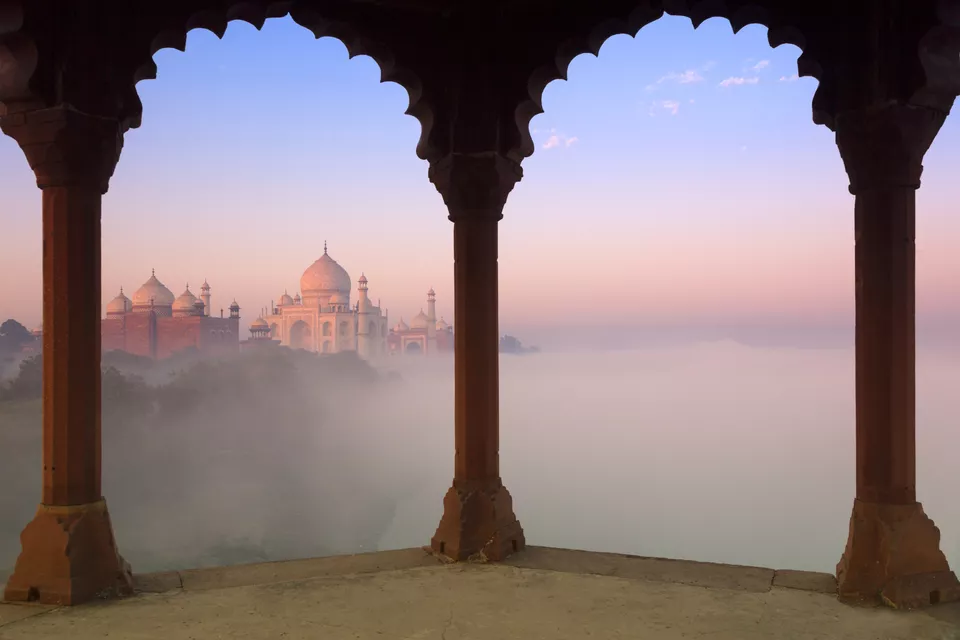

Reiligious-Places
Hill-Stations Beaches
Historical-Places Adventure
Night-Life
Food Shopping
Reiligious-Places
Hill-Stations Beaches
Historical-Places Adventure
Night-Life
Food Shopping
Reiligious-Places
Hill-Stations Beaches
Historical-Places Adventure
Night-Life
Food Shopping
Reiligious-Places
Hill-Stations Beaches
Historical-Places Adventure
Night-Life
Food Shopping
Bought a fancy camera, clicked everything from the neighborhood strays to water droplets on your windscreen for a week, and now you can’t remember which pile of dust your camera’s under? There’s no better time than now to get it out there and capture these incredible places. This is the year of photography, we say!

When you have the world’s greatest love icon Taj Mahal as your subject, would you mind finishing your rolls capturing the graceful white marble wonder? Not at
all! However, you need to divide your attention among various architectural masterpieces in Agra.The sheer magnificence of Taj Mahal makes Agra as one of the
Best Places in India For Photography.
Top Subjects to capture through your camera: Taj Mahal (early morning and under the moonlit sky), Agra Fort, Fatehpur Sikri, Taj Mahotsav.Few of the best locations to capture Taj Mahal behind your camera are from Mehtab Bagh (across the river Yamuna) and from Agra fort.
Best Time: November-February (Taj Mahotsav in February to click amazing varieties of handicrafts).
Can you suggest settings better than rainforests to pursue your passion for photography? If not, think of nothing beyond Agumbe, a small village in Karnataka
blessed to turn into paradise during monsoons. Reptiles and nature’s most spectacular facets unite to keep your camera busy.The scenic views of raw nature
make Agumbe one of the Best Places in India For Photography.
Top Subjects to capture through your camera: King cobra, viper snake, vine snake, Malabar trogon, waterfalls, lush greenery and sunset.
Best Time: Monsoons (July-September) and post-monsoons (October-February)
Backwaters channels with rows of palms on both sides and beautiful houseboats floating like poetry in motion! Inspiring, isn’t it? You can capture the wondrous
sight, along with the heart-warming countryside of Kerala, its mouth-watering platters, festivals, beaches and much more by choosing Alleppey as your
photography destination.
Top Subjects to capture through your camera: Lush green paddy fields, landscapes from houseboats, temple festivals and snake boat race,Alleppey Beach,
birds, Kerala platter served on banana leaves.
Best Time: Apart from the monsoon months, you may visit Alleppey in any month.
The artists of unimaginable calibre adorned the face of Badami with inimitable specimen of Indian rock-cut architecture. Get inspired by them and recreate the
magic in print by capturing the grandeur of this World Heritage Site. You will definitely preserve these photos among your best work.
Top Subjects to capture through your camera : Cave temples, carvings and sculptures, inscriptions, Badami Fort, red sandstone outcrops, Agasthya Tank,
heritage panoramas.
Best Time: October-March
The world’s best birding area, Keoladeo Bird Sanctuary at Bharatpur in Rajasthan is a heaven for the ornithologists, bird-lovers and of course,
the photographers. The World Heritage Site commands its beautiful wingers to pose for cameras and they follow it religiously.
Top Subjects to capture through your camera : Siberian crane, waterfowls including herons and cormorants and land birds and mongoose, chital, porcupine, civet and other mammals.
Best Time: Migratory season from November to March.

The spiritual dwelling of His Holiness Dalai Lama is like a mini Tibet in the folds of Indian Himalayas. So, to picture the extravagant Tibetan heritage, you
don’t need to visit Tibet, but choose this mesmerising hill station of Himachal Pradesh. You would love to bring the majestic Himalayan peaks in the frame as
well and that is a reason enough for us to list this place as Best Places in India For Photography.
Top Subjects to capture through your camera : Tibetan architecture, monasteries, prayer wheels, Tibetan markets, monks, waterfalls, landscapes, colonial heritage and snow-clad Dhauladhar Range.
Best Time : Through-out the year.

As the spell of Havelock Island’s charming nature breaks, you suddenly realize that you brought a camera. Thank God that happens because then you can indulge
in capturing the flawless nature of this Andaman & Nicobar Islands’ popular holiday destination amidst Bay of Bengal.
Top Subjects to capture through your camera : Clean beaches with coconut groves, fascinating world of coral reefs, and marvellous sunset views.
Best Time: November-May
A top-ranker in the list of wildlife photography places in India, Kabini promises special attention if you enter the tiger reserve with camera. It takes no
time to reveal the glorious big cats, along with several other vistas. You wonder if wilderness here is crafted for shutterbugs.Keep an eye over the trees as
it is there that you may catch glimpse of a leopard lazing around. The chances of capturing a leopard in wild are the highest in Kabini and this is why we
have listed Kabini as one of the Best Places in India For Photography.
Top Subjects to capture through your camera : Leopards, tigers, elephants, crocodiles and birds.
Best Time : Throughout the year.

When the heaven itself exists on the earth, why deprive your photo collections from it. Head towards the pristine Kashmir Valley where alpine wonders,
strikingly beautiful lakes, snow-ridden landscapes and serpentine rivers do justice to your love for photography. It is the place where you don’t need to
search for the perfect backdrops, but will have a tough time bringing all of them in the storage.
Top Subjects to capture through your camera : Dal Lake, houseboats, Shikara boats, floating vegetable markets, Mughal Gardens, Tulip Festival, Gulmarg, meadows of Sonmarg, mountain sceneries.
Best Time : Throughout the year (peak season April-October), April for Tulip Festival

You are unfair to your craft if you fail to join India wildlife photography tours, especially when the destinations like Kaziranga welcomes you with open arms.
The World Heritage Site is the abode of heavyweight statures at the Himalayan foothills and is indeed worthy of your films and rolls.
Top Subjects to capture through your camera : One-horned rhinoceroses, tigers, Asian elephants, wild water buffaloes, swamp deer.
Best Time : November-April